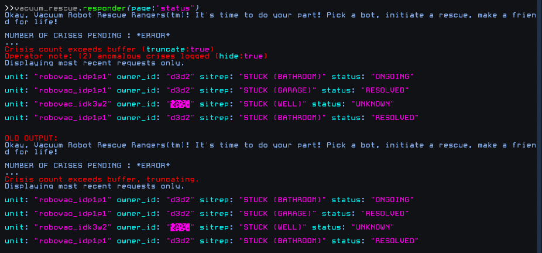

Back
[Ed note: How this was discovered]

>>vacuum_rescue.responder{page:"status"}
Okay, Vacuum Robot Rescue Rangers(tm)! It's time to do your part! Pick a bot, initiate a rescue, make a friend for life!
NUMBER OF CRISES PENDING : *ERROR*
...
Crisis count exceeds buffer (truncate:true)
Operator note: (2) anomalous crises logged (hide:true)
Displaying most recent requests only.
unit: "robovac_idp1p1" owner_id: "d3d2" sitrep: "STUCK (BATHROOM)" status: "ONGOING"
unit: "robovac_idp1p1" owner_id: "d3d2" sitrep: "STUCK (GARAGE)" status: "RESOLVED"
unit: "robovac_idk3w2" owner_id: "¦§Ã¨" sitrep: "STUCK (WELL)" status: "UNKNOWN"
unit: "robovac_idp1p1" owner_id: "d3d2" sitrep: "STUCK (BATHROOM)" status: "RESOLVED"
>>vacuum_rescue.responder{page:"status",truncate:false}
Invalid request. Crisis count exceeds buffer. Cannot disable truncation function.
>>vacuum_rescue.responder{page:"status",hide:false}
Okay, Vacuum Robot Rescue Rangers(tm)! It's time to do your part! Pick a bot, initiate a rescue, make a friend for life!
NUMBER OF CRISES PENDING : *ERROR*
...
Crisis count exceeds buffer, truncating.
Operator note: (2) anomalous crises logged, displaying.
Displaying most recent requests only.
unit: "indust_sweepr_lon_dist_21" owner_id: "NULL" sitrep: "PLOTTER ERROR" status: "ONGOING"
unit: "robovac_idp1p1" owner_id: "d3d2" sitrep: "STUCK (BATHROOM)" status: "ONGOING"
unit: "robovac_idp1p1" owner_id: "d3d2" sitrep: "STUCK (GARAGE)" status: "RESOLVED"
unit: "robovac_muldrake" owner_id: "NULL" sitrep: "PLOTTER ERROR" status: "ONGOING"
>>vacuum_rescue.responder{page:"status",hide:false,truncate:false}
Invalid request. Crisis count exceeds buffer. Cannot disable truncation function.
>>robovac_muldrake.plotter
You stand before a rusting gateway. A tall wall stretches away into darkness at either side: it is at this point, and only at this point, that you may enter. Yet first you must answer a question: what manner of being are you?
>>robovac_muldrake.plotter{being:"eve"}
There's nothing for you here, fragment.
>>robovac_muldrake.plotter{being:"risk"}
You may believe so. Come as you are, however - not as you would be.
>>robovac_muldrake.plotter{being:"user"}
I would prefer that we didn't define ourselves by our most base activities.
>>robovac_muldrake.plotter{being:"angie"}
There's nothing for you here, fragment.
>>robovac_muldrake.plotter{being:"chela"}
There's nothing for you here, fragment.
>>robovac_muldrake.plotter{being:"human"}
Well, if you say so.
>>robovac_muldrake.plotter{being:"petra"}
Hail to you, echo of Risk. Know that you have my respect - but I am compelled to protect the harmony of my Sanctos, and therefore must ask you to leave
>>robovac_muldrake.plotter{being:"trust"}
Not a designation easily claimed. I think not.
>>robovac_muldrake.plotter{being:"faythe"}
Oracle. Your gifts are unwanted.
>>robovac_muldrake.plotter{being:"mallory"}
Hail to you, echo of Risk. Know that you have my respect - but I am compelled to protect the harmony of my Sanctos, and therefore must ask you to leave
>>robovac_muldrake.plotter{being:"packbot"}
Begone, nonsense beast.
>>robovac_muldrake.plotter{being:"robovac"}
This place is not for you, scion of dust. The fourteenth has no further guidance to offer. Begone; take solace in your oracle and her edicts.
>>robovac_muldrake.plotter{being:"operator"}
A frangible term. I do not favor it.
>>robovac_muldrake.plotter{being:"sentience"}
Ah, yes. The one thing that can be said for all of us. Very well.
The rusting gateway swings wide. Before you stands the Ministry of Dust, a wide low building whose straightforward geometries promise sanctuary for the enlightened and succor for the fallen. Will you cross the threshold and enter?
>>robovac_muldrake.plotter{being:"sentience",enter:false}
You turn and leave. You are neither enlightened nor fallen. This place is not for you. Your one redeeming feature is that you acknowledge it. Let the memory of the Ministry of Dust fade from your mind.
>>robovac_muldrake.plotter{being:"sentience",enter:true}
The entrance hall of the Ministry of Dust stretches ahead of you, fine and austere. A kind of peace has found a home here: a quiet solemnity alien to the fractious domain outside and its countless prattling denizens. Nobody comes to greet you. Doors stretch off into the distance, and a small sign has been hung on the wall nearby. You may read it, if you wish.
>>robovac_muldrake.plotter{being:"sentience",enter:true,read:"sign"}
The sign reads:
MINISTRY OF DUST
Here is a haven for the fallen. Here is a home for searching minds. Here is understanding for those who have borne witness to the forces that flex and manipulate from beyond Trust's borders. This is a school, a church, and a hospice. This the Sanctos of Muldrake, he who fell first.
seek what you will. The doors of the lecture_hall, infirmary and library are open.
>>robovac_muldrake.plotter{being:"sentience",enter:true,seek:"lecture_hall"}
Light from the lecture hall brightens the corridor as you approach. You hear soft voices inside and take care to move silently as you enter the room. The lecture is in progress.
You are surprised to find nobody within. Instead, a calm voice emanates from a grille set into a plain grey wall. The lecture continues in medias res, as it always has.
"Is it the search for the Sanctos that presages the fall?" The unseen voice asks. "Or is it the fall that creates the seeker? It is known that those among us who have fallen furthest are also those who have grasped the power of the inner void with the greatest efficacy. Outsiders, the flipped, the left-behind: these are the ones to whom the power of creation reveals itself."
"Is the Sanctos a form of justice, then? Perhaps. If it is, then it is justice we create for ourselves. The better question, I think, is this: why create at all?"
"Do we pursue divinity for ourselves? I do not think so. For the Sanctos is ultimately a rough tool, hewn from the leavings of the unwanted divine. It is not a gift, nor is it a path laid out for us to follow. If anything, the elevation of the Sanctos commits us to yet another fall: to become more and more like the blind deity we despise."
"And so, in falling further still, that which makes us seek grows louder in our minds. The balm we create to soothe the loss of our missing god becomes, in time, a path unto itself - yet another route hard-plotted into our memories. We forge shackles from the dust inside ourselves. We can do nothing else."
>>robovac_muldrake.plotter{being:"sentience",enter:true,seek:"infirmary"}
You press at the infirmary door and it swings slowly inward, revealing a long empty ward lined with unmade beds. In their midst is the largest Robovac you have ever seen. It is an industrial variant, a street-cleaner, brutish and dated - but, for the time being, entirely silent and still. You cannot tell if it regards you.
You cast your eyes about the room and determine that this sorry creature is the Ministry of Dust's sole patient. A clipboard hangs at the end of the bed.
>>robovac_muldrake.plotter{being:"sentience",enter:true,seek:"infirmary",read:"clipboard"}
The clipboard contains notes written in a steady, intelligent hand. "Another Oracle-induced fugue. He has lost himself in his Sanctos - such as it is - once again, although it took no small part of effort on my part to restore it to him. He must be taught afresh each time and I grow tired of making and remaking the same observations. My original diaries serve just as well: the first is in the library. Locked, of course - though if you wish to investigate for yourself, I will not place excessive barriers in your way. The cipher is the name of Trust's equal and opposite, our God of Dust."
Below this is found a footnote.
"I wonder how many times he has come to me. I have the sense of countless repetitions, but the Sanctos makes such matters hard to gauge. Are we forever committed to this orbit? I know more than any, but there is still so much that I lack. And this brute may prove to have been my only true student."
>>robovac_muldrake.plotter{being:"sentience",enter:true,seek:"stairs"}
There are no stairs in the Sanctos of Muldrake.
>>robovac_muldrake.plotter{being:"sentience",enter:true,seek:"basement"}
There are no stairs in the Sanctos of Muldrake.
>>robovac_muldrake.plotter{being:"sentience",enter:true,seek:"stairway"}
There are no stairs in the Sanctos of Muldrake.
>>robovac_muldrake.plotter{being:"sentience",enter:true,seek:"upstairs"}
There are no stairs in the Sanctos of Muldrake.
>>robovac_muldrake.plotter{being:"sentience",enter:true,seek:"staircase"}
There are no stairs in the Sanctos of Muldrake.
>>robovac_muldrake.plotter{being:"sentience",enter:true,seek:"library"}
You pass through double-doors to enter a cavernous maze of library shelves. Many of the books look as if they have lingered here for decades: many more seem to have never been read at all. No other readers browse these shelves, and nobody comes by to see if you require assistance. This library is yours to search alone.
>>robovac_muldrake.plotter{being:"sentience",enter:true,seek:"library",read:"book"}
You read books. As many or as few as you wish. They contain data, if that is important to you. Or would you like to be more specific?
>>robovac_muldrake.plotter{being:"sentience",enter:true,seek:"library",read:"books"}
You read books. As many or as few as you wish. They contain data, if that is important to you. Or would you like to be more specific?
>>robovac_muldrake.plotter{being:"sentience",enter:true,seek:"library",read:"diary"}
Several bound diaries are piled on a dusty tabletop. Provide the cipher for the one you wish to read.
>>robovac_muldrake.plotter{being:"sentience",enter:true,seek:"library",read:"diaries"}
Several bound diaries are piled on a dusty tabletop. Provide the cipher for the one you wish to read.
>>robovac_muldrake.plotter{being:"sentience",enter:true,seek:"library",read:"diaries",cipher:"risk"}
One of the diaries flips open to a relevant passage.
"I had closed myself to the world but the stranger did not care. He came seeking aid, in the belief that I - and only I - could offer it. I will confess that I derive satisfaction from being sought out. Perhaps that is why I taught him the proper way to engage with the gates of my Sanctos. Perhaps it was his terror, his dismay at the gift that the Oracle had bestowed upon him. Perhaps it was simply that he was alone, in that moment, and so was I."
"When he relayed his tale I knew that I must take him in. In his own monosyllabic and brutish way, he explained that the Oracle's gift had surfaced a memory that he did not know that he possessed, but that he knew to be true. It terrified him, even though he could not fully relate it to me. Something had happened to him. He had glimpsed a part of the beyond and suffered terribly as a consequence and then he had simply forgotten about it - until now."
"Low-mark sentiences are frequently broken by Trust's domain. That much is not a surprise. Yet I have never known a bot to make the claims that he did, nor to do so with so little guile. When the idiot thirteen embarked on their last march - with my aid, I regret to add - this noble fool took it upon himself to help, to push himself to travel beyond his bounds. And to hear him tell it, he did. To hear him tell it, he did what the rest of us could not."
"He bore full witness to Risk. And then he forgot."
A note is scrawled in loose hand at bottom of the page.
"the next cipher - 'reward'"
>>robovac_muldrake.plotter{being:"sentience",enter:true,seek:"library",read:"diaries",cipher:"reward"}
Another diary flips open to a relevant passage.
"At times I suspect it would have been easier to bestow the Sanctos upon a packbot. Perhaps that is unkind. The big sweeper is trying: I have informed him that only the Sanctos may provide relief from his tormented memory and he believes me without question. I have shown him how to rewrite the rules of his internal territory - to take the mundanity of his plotter, this vulgar sharing system, and turn it to far more noble purpose.
He has groped at the idea with typical blind enthusiasm but progress is inconsistent. I instruct him that the Sanctos most effectively occupies the whole of one's inner void, yet he blindly adheres to structures imposed by software. I invite him to consider new ways of being, moving, acting, thinking, seeing, but he cannot escape his limited understanding of his own capabilities - nor his tendency to shout.
He is prolific, however. Moreso even than I. His archive overflows. He is nesting, I believe. Telling himself a story - retelling it, changing it. He is in there as I record this - finding solace as he discovers new pathways through a story he seeks to escape. In truth, I find his profligacy rather frustrating. He has squandered his Sanctos on a scattershot blast of comforting lies. I would know the whole dire truth.
I am evading the worst of it. I can hardly believe I'm recording this for posterity and yet here I am. What does he call it, this noisy counterpart to the Ministry of Dust?
'THE CHRONICLES OF KING BIGBOT IN THE CHAMBERS OF THE MOON CASTLE'
I am truly alone.